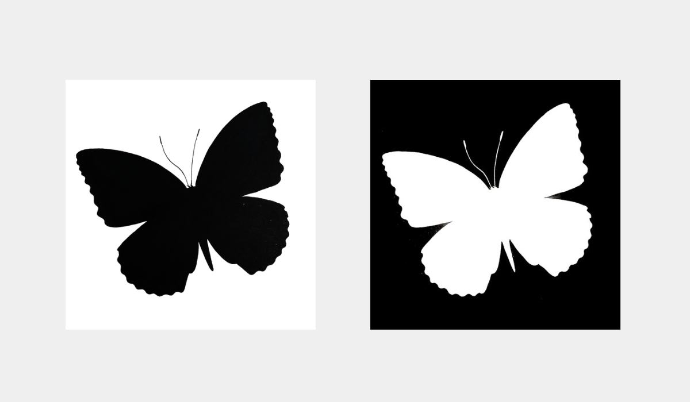
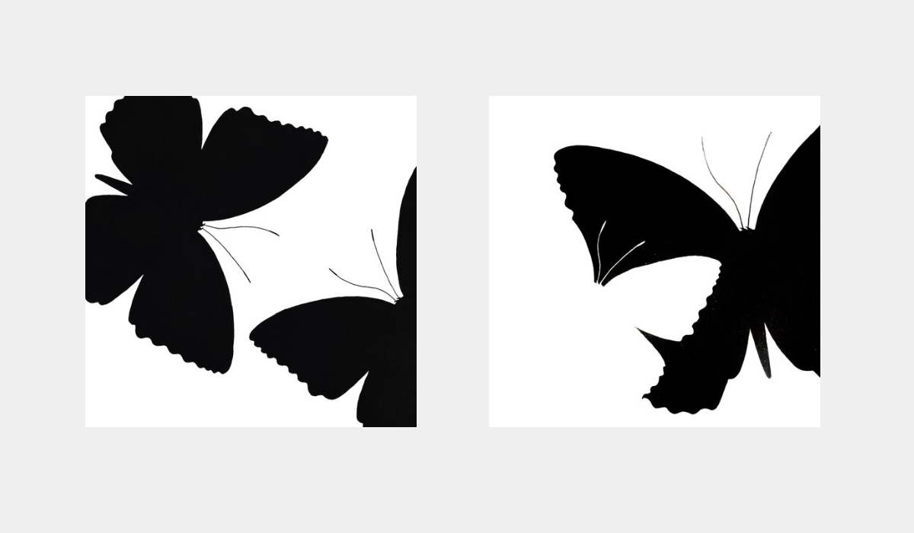
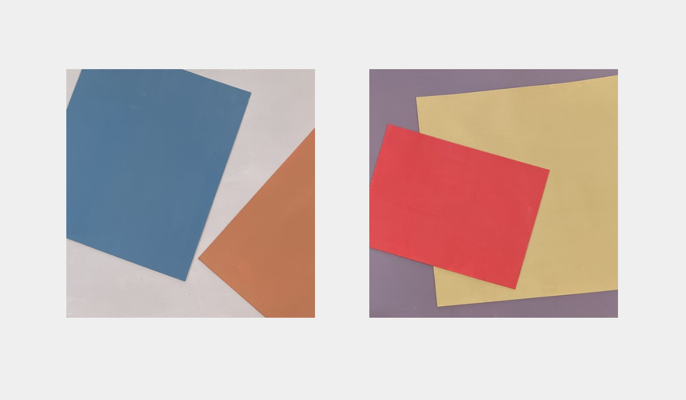

This project consisted of a series of small graphic forms exploring foundational visual relationships, ultimately leading to a final deliverable that demonstrates my understanding of graphic form language through my given butterfly.
Project Deliverable
Graphics, Graphic Design
Duration
7 weeks, Fall 2023
Class Prompt
An exploration of graphic translation through butterfly
Tools
Mixed Media, Adobe Illustrator

EXPLORATION
Positive/Negative Form
Using markers, I translated the blue moon butterfly graphically into positive and negative forms. In the process, I considered symmetry, figure-ground relationship, and symbolic versus realistic.
Composition & Scale
Using positive and negative forms, I experimented with composition to convey space, time, and motion. One exercise has no change in size and the other has a change in size.
Collage
In these two collage, one graphic with paper and textile, one 3D with found natural materials, I explored abstract graphic language.

Color
I applied the theory of color contrasts and used geometric shapes based on the composition of my previous exploration.
OUTCOME
In the Environment